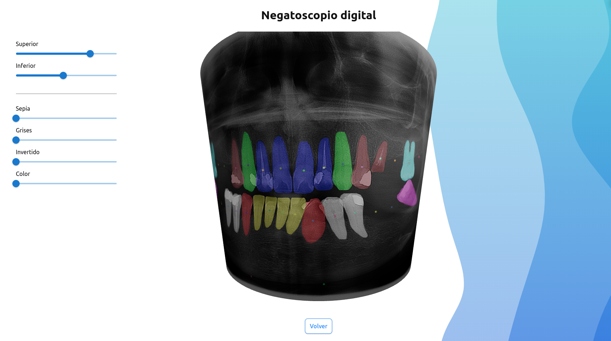

New intelligent methods presumptive diagnosis in pantomographies
The dental panoramic X-ray (panoramic or orthopantomography) is the most accurate and valuable source of information to support dental clinical diagnosis. However, assisted diagnoses are costly, time consuming, and require a wide expertise not always available. This project proposes a comprehensive application that emulates the ability of a human specialist to interpret, quantify and describe different dental and oral conditions and characteristics. The underlying model was trained with several thousands of actual pantomographies and their respective expert diagnoses in natural language, embedding the image analysis and the linguistic latent spaces.
The presumptive diagnoses to be generated encompass a wide range of conditions, such as missing or misaligned dental pieces, infections, irregularities in teeth and gums, impacted dental pieces with periodontal disease, cysts or tumors in the maxillofacial region, among others. The foundation of the functioning of this project consists of intelligent image analysis models trained from several thousands of panoramics diagnosed by specialists. The images were then labeled to train deep networks that would allow detecting and identifying the conditions indicated in their respective diagnoses.
As mentioned, to provide proper support for image-based diagnostic decision-making, this project not only considers the training of image analysis models through deep learning but also supervised diagnoses in natural language. One of the innovative aspects of our model, then, is to correspond the linguistic model of the diagnoses with the parameters of image analysis. This is achieved through embedding techniques of the latent spaces of both models: the semantic space of diagnoses is corresponded with the latent space of the image analysis model.
On the other hand, the work conducted with several thousands of panoramics enables the extraction of demographic parameters, which can be used to determine statistical models of different prevalences of individual and combined dental conditions. This, on one hand, grants greater precision and accuracy in the development of presumptive diagnosis, and on the other hand, enables the accumulation of valuable information for health policies.
Currently, more than 5000 images with their respective diagnostic texts have been labeled and analyzed. This allowed for the creation of an initial effective model for automatic detection and segmentation of dental pieces by type and location, a model for numbering dental pieces according to the International Code (FDI), an automatic landmarking model for anatomical points and centroids of dental pieces, presence/absence of caries, and other conditions. The results are presented in an innovative digital negatoscope model, which facilitates professionals in identifying marked dental pieces on an approximate 3D model of the craniofacial structure (Demo: https://imaglabs.org/panto/, Explanatory video: https://www.youtube.com/watch?v=4Kwjbcvd8Fc).
Within a two-year timeframe, the expectation focuses on two groups of objectives: the consolidation of the model, and the initiation of productization through the development of a functional prototype to initiate its dissemination and commercialization.